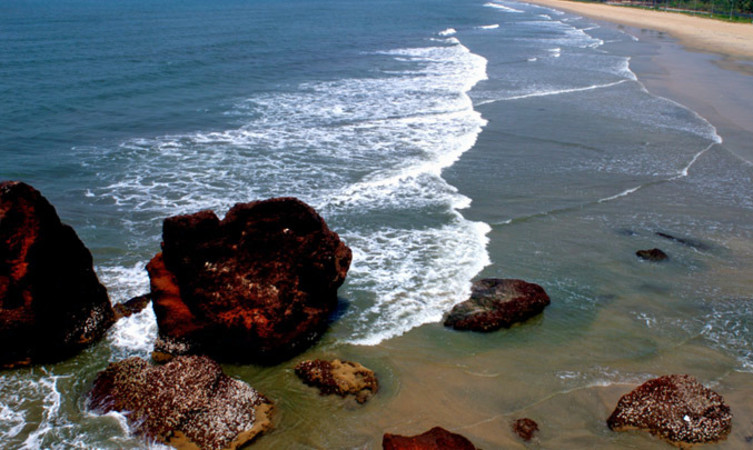

Kannur is most renowned for the Theyyam performances in its temples. This magnificent art form plays an integral part in the culture of this Northern Kerala district. Formerly known as Cannanore, Marco Polo christened it a ‘Great Emporium Of Spice Trade’. Kannur has, since time immemorial, been hailed as an influential sea port. Legend has it that it had interactions and trade relations with the rest of the world since the time of King Solomon to the Greeks, Arabs and Romans. It has a plethora of forts, temples, beaches and wildlife sanctuaries that regularly attract visitors. Major festivals and events are held throughout the year and this is among the best places in Kerala to spend your vacation in.

Perched at a height of 286 meters, the Ezhimala hill is one of the most visually appealing Kannur tourist places. The hill is a part of an isolated cluster of hills and the vantage point offers bedazzling views of the sheer naked natural splendour around – hills covered in a blanket of green, cotton white clouds covering the clear blue skies, and the beautiful valley underneath. The place also has cultural and historical significance – the place was a battlefield during the Chola-Chera wars. Buddhists consider the place sacred because it is believed that Lord Buddha visited Ezhimala.
Palakkayam Thattu is one of the alluring places to visit in Kannur near the Western Ghats because of the verdant greenery and dizzying height of about 3350 feet above the sea level. It also happens to be one of the most visited hill stations in the state of Kerala. Populated by dense forests and several hillocks, the quaint hamlet is a favoured destination for avid trekkers. Palakkayam Thattu is a natural paradise with astounding tranquillity and sereneness which is perfect for long weekend destinations overlooking the lavish foliage from the top of the mountains. If you are looking for an escape from the everyday hustle and bustle of your life, then this Keralan hill-station is the right place.
Considered as one of the most historic sites in Kannur, the St. Angelo Fort was constructed by the first Portuguese viceroy of India. The fort is triangular in shape appears as a massive yet magnificent structure standing at the helm of the ruthless sea. The laterite walls made of stone lend it an even more imposing air and it is a must-visit destination for architecture students. The sea wall segregating the fort from the sea provides breathtaking views of the Mopilla Bay. Visit the fort for taking a relaxing walk in the complex and enjoy stunning views of the Arabian Sea.